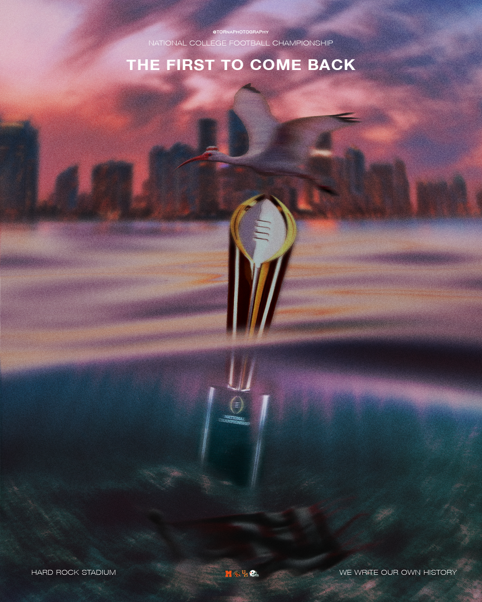

The First to Come Back
Although we didn't win, I created a winning graphic ahead of the game in hopes we would've. The graphic takes the meaning of the Ibis being our mascot as they are the first to come back after a storm. This was made to go along with the 'The Last to Leave' graphic.

Last to Leave
This graphic was made for our campus Watch Party, but this version was made for me personally to go on socials. Building the hype around the game. It popped off on X, check out the stats. You can see more of this graphic here.

Into the Eye of the Storm
The Canes made it to the CFB Playoffs in a historic season for the team. Making it all the way to the championship. With hurricane metaphors I made this graphic to hype up Canes fan in the week leading up to the game.

Welcome To Miami
Going up against Indiana gave me the idea to create a Stranger Things inpired graphic. The core 4 being the core 4 players of the Canes going up against the Mind Flayer, that is Indiana. In season 5 of the show they defeat the Mind Flayer and Vecna, this graphic was to show the Canes defeating Indiana.

Sam Bennett
In honor of the back to back champs, I wanted to create a graphic that not only resembled something the Panthers would post, but also conveyed the energy of such a historic win.

Cam Ward
Cam Wards Iconic celebration. “You have to let your opponent know they stink. They smell like a zombie.” Who was Cam Ward going to beat next?

Xavier Restrepo
When Restrepo broke the All-Time Receiving Yards record, I knew I had to make something for it.